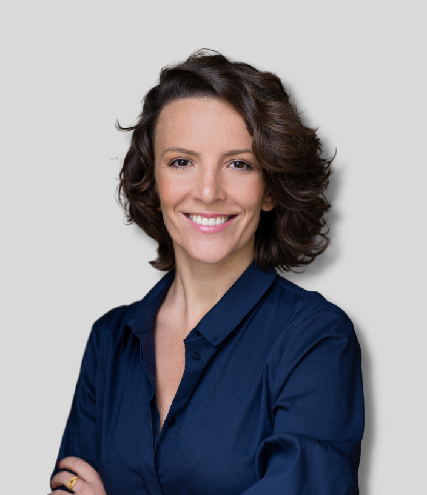

Jediný festival svého druhu v ČR. Přijďte si zažít, jak vypadá cirkulární ekonomika v praxi, inspirovat se, potkat lidi, co tvoří produkty a řešení, které myslí na naši budoucnost, a odejdete s nápady, co změnit u sebe doma nebo ve firmě.
Inovativní řešení a příklady dobré praxe z ČR i ze zahraničí, podané srozumitelně.
Praktické dílny — upcyklace, vaření ze zbytků, opravy, DIY. Odejdete s dovedností.
Produkty a projekty firem, které dokazují, že cirkularita funguje. Postavená z znovu-použitých materiálů.
Oblečení, co už nenosíte, dostane druhý život. Komunitní swap a bazar.
Prostor pro opravy a úpravy věcí pod vedením odborníků. Po celou dobu festivalu.
Oblečení z recyklovaných a upcyklovaných materiálů. Udržitelnost, která vypadá dobře.
 Festival vzniká za podpory hlavního města Prahy
Festival vzniká za podpory hlavního města Prahy
Vyberte si den a klidně si program filtrujte podle toho, co vás zajímá.
Kdo: ReKáva + Kokoza
Brzy RegistraceKdo: PII, INCIEN
Uzavřená akce, jen na pozvánky.
Kdo: INCIEN
Brzy RegistraceKdo: CE HUB Pardubice
Brzy RegistraceKdo: Pavla Antonínová
Brzy RegistraceNavazuje na předchozí přednášku Pavly Antonínové.
Kdo: Jana Horejšová (On the Boat)
Brzy RegistraceKdo: Kampus dílna
Brzy RegistraceKdo: Nataša Foltánová
Brzy RegistraceKdo: Vedu Clothing (Veronika Dušková)
Brzy RegistraceKdo: Jitka Nováčková (moderátorka), Simona Babčáková, Soňa Klepek Jonášová a další
Kdo: Jana Horejšová, Kamila Vodochodská a další
Čas a místo upřesníme.
Čas a místo upřesníme.
Kdo: Kokoza
Čas upřesníme.
Slavnostní večer pro zvané hosty, partnery a přátele — reflexe 11 let cirkularity v Česku.
Kdo: ReKáva + Kokoza
Brzy RegistraceKdo: INCIEN
Brzy RegistraceKdo: Broňa (Pražské služby)
Brzy RegistraceKdo: INCIEN
Brzy RegistraceKdo: Jana Horejšová (On the Boat)
Brzy RegistraceKdo: Kampus dílna
Brzy RegistraceKdo: řečníka upřesníme
Kdo: Roman Stáša
Brzy RegistraceKdo: Tady Tali
Čas a místo upřesníme.
Čas a místo upřesníme.
Kdo: Kokoza
Čas upřesníme.
Program průběžně doplňujeme a upřesňujeme. Sledujte nás.
Mnohem líp se zažije — když si osaháte materiály, vyzkoušíte principy na vlastní kůži a poslechnete si lidi, kteří se tématu věnují každý den. Chceme propojit ty, které spojuje jedno: přesvědčení, že věci můžou fungovat dokola, ne jednosměrně. Protože cirkularita není obor ani teorie z konferencí. Je to způsob, jak přemýšlet o světě a o tom, co po sobě necháme.
Cirkulární ekonomika bývá vnímaná jako něco vědeckého a technicistního — téma do odborných konferencí a strategických dokumentů, které se běžného člověka netýká.
Je v každodenních rozhodnutích. V tom, co uděláme se starým svetrem, se zbytky večeře, z čeho se rozhodneme vyrobit nový produkt nebo od koho objednáme nábytek do kanceláře. Festival Dokola je oslava přesně tohohle - oslava změny myšlení, návratu k selskému rozumu a radosti z inovací.
Postupně odhalujeme jména lidí, kteří cirkularitu nejen znají, ale žijí.

Moderátorka talkshow Let's Get Circular

Hostka talkshow Let's Get Circular

Hostka talkshow Let's Get Circular

Přednáška: Je Praha cirkulární?

Přednáška: Jak ovlivňuji svět tím, co nakupuji

On the Boat · styling ze sekáče & přehlídka

Móda z upcyklovaných materiálů

Vedu Clothing · šití & přešívání
Festival je v jádru zdarma. U aktivit s omezenou kapacitou si zarezervujete místo, ať máme přehled a vy máte jistotu.
Praktické dílny mají omezenou kapacitu. Lístek vám drží místo a pokrývá materiál. Prodej spustíme přes GoOut.
Na přednášky, otevřenou dílnu, talkshow a komentované prohlídky si zdarma zarezervujete místo. Není to povinné, ale pomůže nám to s kapacitou — a vám připomene přijít.
Swap, výstava a festivalová atmosféra jsou volně přístupné. Prostě dorazte.
Workshopy i bezplatné rezervace najdete na jednom místě. Připravujeme — jakmile bude spuštěno, objeví se tu tlačítko a dáme vědět na sociálních sítích.
Brzy Odkaz na GoOut připravujemeCirkularita je o spolupráci. Pokud máte produkt, téma nebo nápad, který do festivalu zapadá, máme pro vás místo.
Ukažte své cirkulární řešení přímo v proudu festivalu — na výstavě postavené ze znovu-použitých materiálů.
Detaily pro firmy →Přiveďte třídu na program šitý na míru žákům a studentům. Přednášky, výstava, dílna i materiály do výuky.
Detaily pro školy →Staňte se součástí děje, ne logem v rohu. Od podpory přes zapojení do programu až po vlastní téma na pódiu.
Detaily pro partnery →Festival vzniká díky lidem a organizacím, kteří to s cirkularitou myslí vážně.


Festival Dokola 2026 vzniká za podpory hl. m. Prahy.
Lídr tématu cirkularity v ČR, který letos slaví 11 let. Od dat a strategických konzultací po vzdělávání a osvětu — INCIEN dostává cirkularitu do médií, měst i firem. Web INCIEN →
Hybernská 998/4, 110 00 Praha — Nové Město
Prostor v centru města, který sám žije principy cirkularity: upcyklovaný nábytek, recyklované materiály, efektivní hospodaření s vodou.
Otevřít v Mapách →Chcete vystavovat, přivést školu, být partnerem nebo máte vlastní nápad? Napište — cirkularita je o spolupráci.